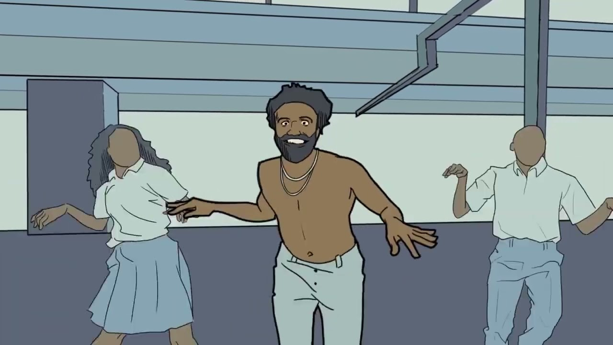
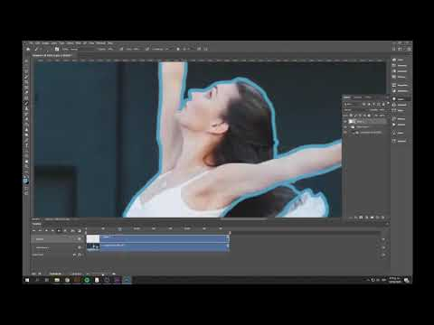
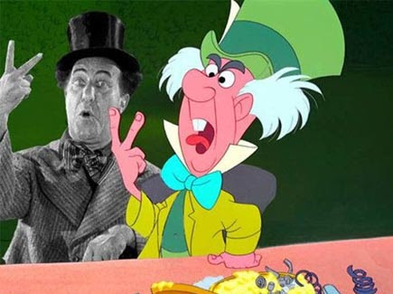
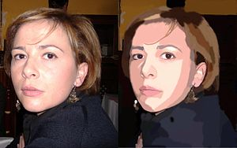
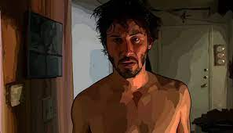
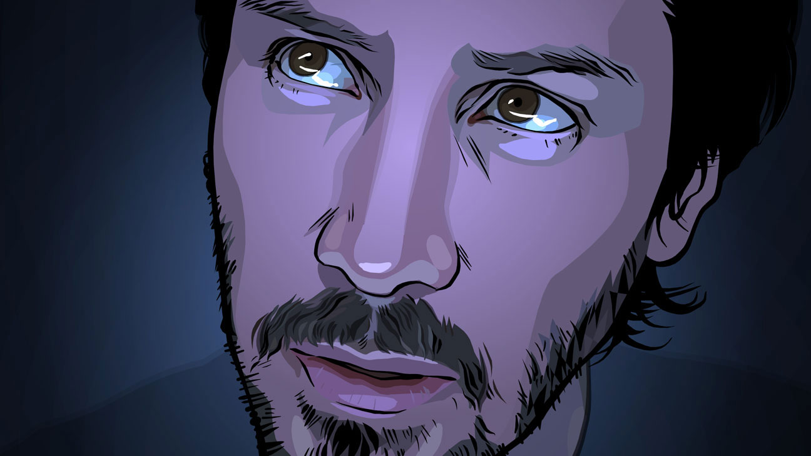
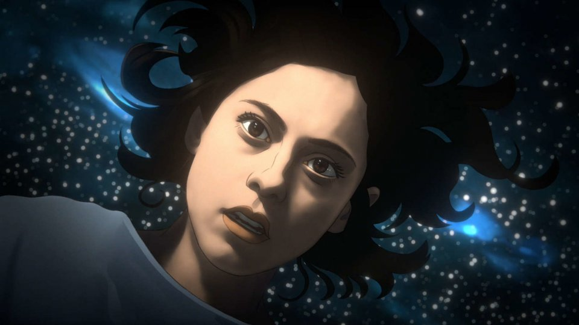
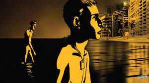
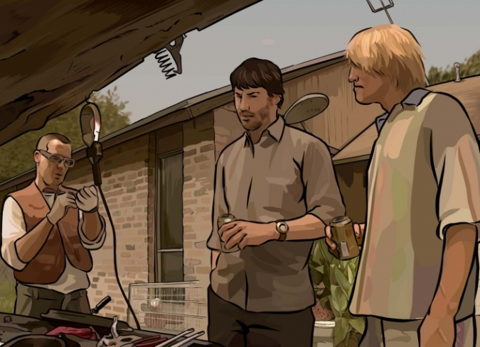

La rotoscopia es un tipo de animación que consiste en calcar vídeos de acción real y dibujar sobre ellos para que la animación parezca realista. Esto se suele hacer proyectando las imágenes de acción en vivo en un panel de vidrio, y luego trazando y personalizando el tema de acuerdo con la escena. El principal caso de uso de la Animación Rotoscópica es en las películas de acción en vivo, donde el mate o el contorno de un personaje de la película puede extraerse de una escena y utilizarse para otra escena con un fondo diferente.








